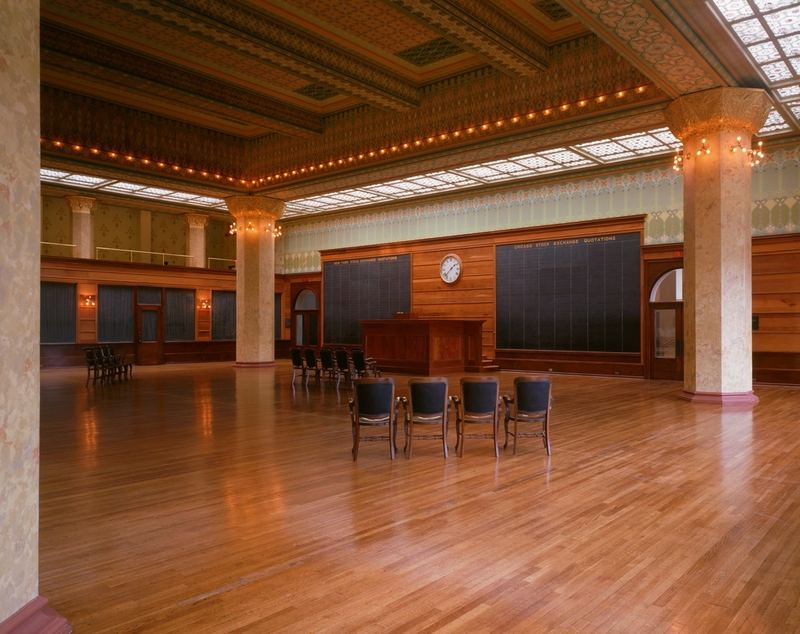

アイルランドのスター選手オコナーで「オペレーション・ブレットプルーフ」が進行中'Operation Bulletproof' underway for Irish star O'Connorアイルランドの年間最優秀アスリート（共同受賞）に選ばれたばかりのケイト・オコナーは、可能な限り最高の状態を目指す中で「オペレーション・ブレットプルーフ」が進行中だと述べた
アイルランドのスター選手オコナーで「オペレーション・ブレットプルーフ」が進行中'Operation Bulletproof' underway for Irish star O'Connorアイルランドの年間最優秀アスリート（共同受賞）に選ばれたばかりのケイト・オコナーは、可能な限り最高の状態を目指す中で「オペレーション・ブレットプルーフ」が進行中だと述べた 「既に印刷されたものを取り消すことはできない」――アマンダ・バイラム氏、自身のセルフヘルプ本に対するラッセル・ブランド氏の推薦から距離を置く‘I can’t undo what’s already been printed’ – Amanda Byram distances herself from Russell Brand endorsement of her self-help bookブランド氏は今月初め、強姦1件と性的暴行3件で有罪判決を受け、10年6カ月の禁錮刑を言い渡された。
「既に印刷されたものを取り消すことはできない」――アマンダ・バイラム氏、自身のセルフヘルプ本に対するラッセル・ブランド氏の推薦から距離を置く‘I can’t undo what’s already been printed’ – Amanda Byram distances herself from Russell Brand endorsement of her self-help bookブランド氏は今月初め、強姦1件と性的暴行3件で有罪判決を受け、10年6カ月の禁錮刑を言い渡された。 本日の出来事：木曜日Here's What Happened Today: Thursday今日知っておくべき最も重要なアイルランドおよび国際ニュース。
本日の出来事：木曜日Here's What Happened Today: Thursday今日知っておくべき最も重要なアイルランドおよび国際ニュース。 Horse Sport Irelandの清算にもかかわらず、アイルランドの馬術チームはロサンゼルス五輪に出場する見込みIrish equestrian teams likely to compete at LA Olympics despite Horse Sport Ireland liquidationHorse Sport Irelandが清算手続きに入るというニュースを受け、総合馬術と障害飛越のチームをめぐって懸念が生じていた。
Horse Sport Irelandの清算にもかかわらず、アイルランドの馬術チームはロサンゼルス五輪に出場する見込みIrish equestrian teams likely to compete at LA Olympics despite Horse Sport Ireland liquidationHorse Sport Irelandが清算手続きに入るというニュースを受け、総合馬術と障害飛越のチームをめぐって懸念が生じていた。 欧州ラウンドアップ：ブライトンが勝利を取り戻し、10人のボーンマスが粘って勝利を手にするEuro round-up: Brighton back to winning ways; 10-man Bournemouth grind out victory
欧州ラウンドアップ：ブライトンが勝利を取り戻し、10人のボーンマスが粘って勝利を手にするEuro round-up: Brighton back to winning ways; 10-man Bournemouth grind out victory 「彼は私にとって父親のような存在だった」――バブス・キーティング、生涯の友人でティップの伝説ドニー・ニーロンを追悼‘He was a father figure to me’ — Babs Keating pays tribute to lifelong friend and Tipp legend Donie Nealon若き学校教師としてアードフィナンでハーリング復活のきっかけを作ったことから、ピッチとサイドラインで共にクローク・パークを制覇したことまで、全アイルランド選手権を5度制した優勝者が
「彼は私にとって父親のような存在だった」――バブス・キーティング、生涯の友人でティップの伝説ドニー・ニーロンを追悼‘He was a father figure to me’ — Babs Keating pays tribute to lifelong friend and Tipp legend Donie Nealon若き学校教師としてアードフィナンでハーリング復活のきっかけを作ったことから、ピッチとサイドラインで共にクローク・パークを制覇したことまで、全アイルランド選手権を5度制した優勝者が 元ラグビー解説者のスターマー＝スミス氏が81歳で死去Former rugby broadcaster Starmer-Smith dies aged 81元イングランド代表スクラムハーフで解説者のナイジェル・スターマー＝スミス氏が81歳で死去した。
元ラグビー解説者のスターマー＝スミス氏が81歳で死去Former rugby broadcaster Starmer-Smith dies aged 81元イングランド代表スクラムハーフで解説者のナイジェル・スターマー＝スミス氏が81歳で死去した。 IRFU、「好調」な会計年度を経て150万ユーロの黒字を報告IRFU report €1.5m surplus after 'strong' financial yearIRFUのケビン・ポッツ最高経営責任者は、7月31日に終了した年度で150万ユーロの黒字を報告したことを受け、同協会は競技への投資を「自信を持って継続できる」と述べた
IRFU、「好調」な会計年度を経て150万ユーロの黒字を報告IRFU report €1.5m surplus after 'strong' financial yearIRFUのケビン・ポッツ最高経営責任者は、7月31日に終了した年度で150万ユーロの黒字を報告したことを受け、同協会は競技への投資を「自信を持って継続できる」と述べた 次期EU予算、より手ごわい課題であることが明らかになりつつあるNext EU budget proving to be a more difficult beast7年間のEU予算で合意を得るのは決して容易ではないが、この長期予算はこれまでとは異なり、より手ごわいものになることは明らかだ、とEuropeは書いている
次期EU予算、より手ごわい課題であることが明らかになりつつあるNext EU budget proving to be a more difficult beast7年間のEU予算で合意を得るのは決して容易ではないが、この長期予算はこれまでとは異なり、より手ごわいものになることは明らかだ、とEuropeは書いている マイケル・D・ヒギンズ氏、ダブリン中心部での詩の朗読会でHSEをめぐる論争について冗談Michael D Higgins quips about HSE controversy at poetry reading in Dublin city centreヒギンズ氏は、新アルバム『Migrants in Time』の詩を紹介しながら、ガザでのジェノサイドや気候変動についても触れた。
マイケル・D・ヒギンズ氏、ダブリン中心部での詩の朗読会でHSEをめぐる論争について冗談Michael D Higgins quips about HSE controversy at poetry reading in Dublin city centreヒギンズ氏は、新アルバム『Migrants in Time』の詩を紹介しながら、ガザでのジェノサイドや気候変動についても触れた。 アイルランド対オーストラリア：ラグビー担当記者がネーションズ・チャンピオンシップ最後の試合のスコアを予想Ireland v Australia: Our rugby writers predict the score for the final Nations Championship outing
アイルランド対オーストラリア：ラグビー担当記者がネーションズ・チャンピオンシップ最後の試合のスコアを予想Ireland v Australia: Our rugby writers predict the score for the final Nations Championship outing モリッシー、マウスを使った実験で大学を批判Morrissey criticises university for experiments on miceモリッシーは、科学実験のためにマウスに敗血症を誘発したとして、ロンドン大学クイーン・メアリー校（QMUL）を批判した。
モリッシー、マウスを使った実験で大学を批判Morrissey criticises university for experiments on miceモリッシーは、科学実験のためにマウスに敗血症を誘発したとして、ロンドン大学クイーン・メアリー校（QMUL）を批判した。 ブライトン、カンファレンスリーグでクラヨバに快勝Brighton breeze past Craiova in Conference Leagueイブラヒム・オスマンがブライトンでの初ゴールを決め、チームは10人となったウニヴェルシタテア・クラヨバに4-0で快勝し、勝利を取り戻した。
ブライトン、カンファレンスリーグでクラヨバに快勝Brighton breeze past Craiova in Conference Leagueイブラヒム・オスマンがブライトンでの初ゴールを決め、チームは10人となったウニヴェルシタテア・クラヨバに4-0で快勝し、勝利を取り戻した。 テイラー、敗れての競技復帰Taylor makes losing return to competitionフィル・テイラーは、木曜日にポーツマスで開催されたMODUSスーパーシリーズ・インターナショナル・ペアーズ大会で、イングランド代表のチームメートであるエイドリアン・ルイスと組んだ5試合すべてに敗れた。
テイラー、敗れての競技復帰Taylor makes losing return to competitionフィル・テイラーは、木曜日にポーツマスで開催されたMODUSスーパーシリーズ・インターナショナル・ペアーズ大会で、イングランド代表のチームメートであるエイドリアン・ルイスと組んだ5試合すべてに敗れた。 ロスコモンのナイト・アンド・デイ・フェスティバルの出演者が発表Line-up announced for Night and Day festival in Roscommon来夏ロスコモンで開催されるナイト・アンド・デイ音楽フェスティバルでは、レイザーライト、ザ・スクラッチ、ジ・アカデミックがヘッドライナーを務める。
ロスコモンのナイト・アンド・デイ・フェスティバルの出演者が発表Line-up announced for Night and Day festival in Roscommon来夏ロスコモンで開催されるナイト・アンド・デイ音楽フェスティバルでは、レイザーライト、ザ・スクラッチ、ジ・アカデミックがヘッドライナーを務める。 トリプル・ロックをめぐり、国防委員会が来週再び会合Defence committee to meet again next week on Triple Lockオイレアクトゥスの国防委員会は、国連の…の撤廃を目指す政府法案について提出された修正案の審議を続けるため、来週さらに3日間会合を開く
トリプル・ロックをめぐり、国防委員会が来週再び会合Defence committee to meet again next week on Triple Lockオイレアクトゥスの国防委員会は、国連の…の撤廃を目指す政府法案について提出された修正案の審議を続けるため、来週さらに3日間会合を開く 10人になったボーンマス、セルタ・ビーゴ戦で勝利を奪うTen-man Bournemouth snatch victory at Celta Vigoボーンマスは10人になりながらも逆転してセルタ・ビーゴに2-1で勝利し、ヨーロッパリーグのラウンド16への自動進出に一歩近づいた。
10人になったボーンマス、セルタ・ビーゴ戦で勝利を奪うTen-man Bournemouth snatch victory at Celta Vigoボーンマスは10人になりながらも逆転してセルタ・ビーゴに2-1で勝利し、ヨーロッパリーグのラウンド16への自動進出に一歩近づいた。 バンを盗み、ダブリンの歩道を逆走した疑いで男（30代）を逮捕Man (30s) arrested after allegedly stealing van and driving it wrong way down Dublin footpathそのバンは歩道に乗り上げ、逆走し、トラムの線路に乗り入れた。
バンを盗み、ダブリンの歩道を逆走した疑いで男（30代）を逮捕Man (30s) arrested after allegedly stealing van and driving it wrong way down Dublin footpathそのバンは歩道に乗り上げ、逆走し、トラムの線路に乗り入れた。 盗まれたバンがダブリンで道路を逆走し歩道を走行、男を逮捕Man arrested after stolen van is driven wrong way down road and on footpath in Dublin
盗まれたバンがダブリンで道路を逆走し歩道を走行、男を逮捕Man arrested after stolen van is driven wrong way down road and on footpath in Dublin BBC、デュラン・デュランのアンディ・テイラーの追悼番組を発表BBC announces tribute shows for Duran Duran's Andy TaylorBBCは、デュラン・デュランのギタリスト、アンディ・テイラーの死去を受け、追悼番組を放送すると発表した。
BBC、デュラン・デュランのアンディ・テイラーの追悼番組を発表BBC announces tribute shows for Duran Duran's Andy TaylorBBCは、デュラン・デュランのギタリスト、アンディ・テイラーの死去を受け、追悼番組を放送すると発表した。 保護者ら、子どもたちが通学のために横断する「危険な」中央分離帯付き道路の解決策を求めるParents seek solutions to 'dangerous' dual carriageway children cross to get to school地元住民によると、車が日常的に信号無視をし、場合によっては自転車や歩行者をはねているという。
保護者ら、子どもたちが通学のために横断する「危険な」中央分離帯付き道路の解決策を求めるParents seek solutions to 'dangerous' dual carriageway children cross to get to school地元住民によると、車が日常的に信号無視をし、場合によっては自転車や歩行者をはねているという。 第2次世界大戦中の船員の遺骨、デリー県の湿原で回収Remains of WWII sailor recovered from Co Derry bog彼の飛行機が墜落してからほぼ80年後、カナダ人船員の遺骨がデリー県の湿原地帯で回収された。
第2次世界大戦中の船員の遺骨、デリー県の湿原で回収Remains of WWII sailor recovered from Co Derry bog彼の飛行機が墜落してからほぼ80年後、カナダ人船員の遺骨がデリー県の湿原地帯で回収された。 オズモンド：恵まれた人生だったが、代償もあったOsmond: I have had a blessed life but it came at a priceドニー・オズモンドは、「恵まれた人生」だったものの、「代償もあった」と語った。
オズモンド：恵まれた人生だったが、代償もあったOsmond: I have had a blessed life but it came at a priceドニー・オズモンドは、「恵まれた人生」だったものの、「代償もあった」と語った。 ハイバーニア・ライン、コークとフランスを結ぶフェリーを突然運航停止Hibernia Line abruptly stops ferries between Cork and Franceハイバーニア・ライン社は「運航停止によりご迷惑をおかけすることをお詫びします」と述べた
ハイバーニア・ライン、コークとフランスを結ぶフェリーを突然運航停止Hibernia Line abruptly stops ferries between Cork and Franceハイバーニア・ライン社は「運航停止によりご迷惑をおかけすることをお詫びします」と述べた ダブリンの新しい携帯電話禁止のレストランが、スマートフォンとの付き合い方を見直すきっかけになるDublin's new no-phones restaurant will make you rethink your relationship with your smartphoneHey Annieでの食事の唯一の難点は、携帯電話を返してもらうことだ。
ダブリンの新しい携帯電話禁止のレストランが、スマートフォンとの付き合い方を見直すきっかけになるDublin's new no-phones restaurant will make you rethink your relationship with your smartphoneHey Annieでの食事の唯一の難点は、携帯電話を返してもらうことだ。 エイダン・フィッツモーリス：カタールでU-17代表に何が起きるかが、今後10年間でアイルランドサッカーがどのような形になるかを大きく左右するだろうAidan Fitzmaurice: What happens with the U-17s in Qatar will have a big say in how Irish football shapes up over the next decade
エイダン・フィッツモーリス：カタールでU-17代表に何が起きるかが、今後10年間でアイルランドサッカーがどのような形になるかを大きく左右するだろうAidan Fitzmaurice: What happens with the U-17s in Qatar will have a big say in how Irish football shapes up over the next decade 退任する判事、法廷で犯罪者が女性ガルダイに「性的」で「女性蔑視的」な暴言を浴びせると語るRetiring judge said offenders sling 'sexual' and 'misogynistic' abuse at female gardaí in courtパトリシア・ハーニー判事は、法廷に配置されたガルダイの隊員、特に女性隊員を称賛した。彼女によれば、隊員たちは「不屈の精神」をもって振る舞い続け、
退任する判事、法廷で犯罪者が女性ガルダイに「性的」で「女性蔑視的」な暴言を浴びせると語るRetiring judge said offenders sling 'sexual' and 'misogynistic' abuse at female gardaí in courtパトリシア・ハーニー判事は、法廷に配置されたガルダイの隊員、特に女性隊員を称賛した。彼女によれば、隊員たちは「不屈の精神」をもって振る舞い続け、 2026年に入り、ガルダイによる犯罪行為の疑いでフィオスルーに116件の付託Fiosrú had 116 referrals for alleged criminal activity by gardaí so far in 2026
2026年に入り、ガルダイによる犯罪行為の疑いでフィオスルーに116件の付託Fiosrú had 116 referrals for alleged criminal activity by gardaí so far in 2026 ガルダイによる犯罪の申し立てが1年で2倍にAllegations of crimes committed by gardaí double in a year責任者は「圧倒的多数が専門的で思いやりのあるサービスを提供しているが、基準に達していない者も少数いる」と述べた。
ガルダイによる犯罪の申し立てが1年で2倍にAllegations of crimes committed by gardaí double in a year責任者は「圧倒的多数が専門的で思いやりのあるサービスを提供しているが、基準に達していない者も少数いる」と述べた。 カルバート＝ルーウィン、リーズ・ユナイテッドと新契約に合意Calvert-Lewin agrees fresh deal with Leeds Unitedリーズは、ストライカーのドミニク・カルバート＝ルーウィンがクラブと新たに2年半の契約を結んだと発表した。
カルバート＝ルーウィン、リーズ・ユナイテッドと新契約に合意Calvert-Lewin agrees fresh deal with Leeds Unitedリーズは、ストライカーのドミニク・カルバート＝ルーウィンがクラブと新たに2年半の契約を結んだと発表した。 最高裁判所、ケビン・ラニー誘拐事件でギャングの「首謀者」とされた男の30年の刑に対する異議申し立てについて判断へSupreme Court to decide on challenge to 30-year sentence of man who was gang ‘ringleader’ in Kevin Lunney kidnap
最高裁判所、ケビン・ラニー誘拐事件でギャングの「首謀者」とされた男の30年の刑に対する異議申し立てについて判断へSupreme Court to decide on challenge to 30-year sentence of man who was gang ‘ringleader’ in Kevin Lunney kidnap ドニー・ニーロンの名は偉大さの代名詞だったDonie Nealon's name was synonymous with greatnessRTÉのGAA担当記者マーティ・モリッシーが、亡くなった友人でティペラリーのハーリングの伝説、ドニー・ニーロンに追悼の意を表する。
ドニー・ニーロンの名は偉大さの代名詞だったDonie Nealon's name was synonymous with greatnessRTÉのGAA担当記者マーティ・モリッシーが、亡くなった友人でティペラリーのハーリングの伝説、ドニー・ニーロンに追悼の意を表する。 RTÉの公会計委員会への出席から得られた5つの要点5 takeaways from RTÉ's PAC appearanceRTÉの上級幹部とメディア省の高官が本日、公会計委員会に出席し、議員らが…について質問した。
RTÉの公会計委員会への出席から得られた5つの要点5 takeaways from RTÉ's PAC appearanceRTÉの上級幹部とメディア省の高官が本日、公会計委員会に出席し、議員らが…について質問した。 入植者らがヨルダン川西岸でパレスチナ人家族の家々の基礎を破壊Settlers smash foundations of Palestinian family's homes in West Bank
入植者らがヨルダン川西岸でパレスチナ人家族の家々の基礎を破壊Settlers smash foundations of Palestinian family's homes in West Bank 元ラグビー解説者のナイジェル・スターマー＝スミス氏が81歳で死去Former rugby broadcaster Nigel Starmer-Smith dies aged 81
元ラグビー解説者のナイジェル・スターマー＝スミス氏が81歳で死去Former rugby broadcaster Nigel Starmer-Smith dies aged 81 Leap Card利用者、自動トップアップへの新規登録ができなくなるLeap Card users no longer allowed to sign up for auto top-up銀行口座を変更したり、カードを紛失したり、支払いを怠ったりした通勤者はサービスを再び有効化できなくなり、通知がなかったことへの批判が起きている
Leap Card利用者、自動トップアップへの新規登録ができなくなるLeap Card users no longer allowed to sign up for auto top-up銀行口座を変更したり、カードを紛失したり、支払いを怠ったりした通勤者はサービスを再び有効化できなくなり、通知がなかったことへの批判が起きている 大尉、審問で「悲鳴と銃声」を聞き「最悪の事態が起きたと思った」と語るCaptain tells inquest he 'assumed the worst had happened' after hearing 'screams and gunshots'ルーニーの母親ナターシャ・マクロスキーは、証言中に明らかに動揺し、しばらくの間、審問を退席した
大尉、審問で「悲鳴と銃声」を聞き「最悪の事態が起きたと思った」と語るCaptain tells inquest he 'assumed the worst had happened' after hearing 'screams and gunshots'ルーニーの母親ナターシャ・マクロスキーは、証言中に明らかに動揺し、しばらくの間、審問を退席した トランプ氏、感謝祭のメッセージを使って政敵、移民、連邦政府を激しく非難Trump uses Thanksgiving message to lash out at political foes, immigrants, federal governmentトランプ氏は自身のプラットフォーム「Truth Social」への投稿で、不正、過ち、あるいは犯罪行為で非難した人々に祝日の挨拶を送った
トランプ氏、感謝祭のメッセージを使って政敵、移民、連邦政府を激しく非難Trump uses Thanksgiving message to lash out at political foes, immigrants, federal governmentトランプ氏は自身のプラットフォーム「Truth Social」への投稿で、不正、過ち、あるいは犯罪行為で非難した人々に祝日の挨拶を送った リーグ・オブ・アイルランド移籍最新情報：タイリーク・ウィルソンがボヘミアンズに復帰League of Ireland transfer latest: Tyreke Wilson moves back to Bohemians
リーグ・オブ・アイルランド移籍最新情報：タイリーク・ウィルソンがボヘミアンズに復帰League of Ireland transfer latest: Tyreke Wilson moves back to Bohemians ヨーロッパリーグの最新スコアEuropa League latest scores欧州で多くの試合が行われた一夜。
ヨーロッパリーグの最新スコアEuropa League latest scores欧州で多くの試合が行われた一夜。 連合の現状：IRFU、上昇するアビバ・スタジアムのチケット価格を擁護、150万ユーロの黒字への復帰とワールドカップ開催地立候補の可能性State of the union: IRFU defend rising Aviva Stadium ticket prices, return to €1.5m profit and potential World Cup bid
連合の現状：IRFU、上昇するアビバ・スタジアムのチケット価格を擁護、150万ユーロの黒字への復帰とワールドカップ開催地立候補の可能性State of the union: IRFU defend rising Aviva Stadium ticket prices, return to €1.5m profit and potential World Cup bid 豊かな世界の「セックス不況」は悪化しているThe rich world’s sexual recession is getting worse疲労は原因の一つにすぎない。
豊かな世界の「セックス不況」は悪化しているThe rich world’s sexual recession is getting worse疲労は原因の一つにすぎない。 男が家族3人を手斧で殴ったと裁判で証言Man struck three family members with hatchet, trial told誕生日の祝いが悲劇で終わった。49歳の男が手斧を取り出し、女性の家族3人を殴り、重い頭部のけがを負わせた
男が家族3人を手斧で殴ったと裁判で証言Man struck three family members with hatchet, trial told誕生日の祝いが悲劇で終わった。49歳の男が手斧を取り出し、女性の家族3人を殴り、重い頭部のけがを負わせた アイルランド対オーストラリア：知っておくべきすべてのことIreland v Australia: All you need to knowアイルランドにとって初となるネーションズ・チャンピオンシップは、金曜日のオーストラリア戦で幕を閉じ、同国は5位でのフィニッシュを目指す。知っておくべきことはすべてこちら
アイルランド対オーストラリア：知っておくべきすべてのことIreland v Australia: All you need to knowアイルランドにとって初となるネーションズ・チャンピオンシップは、金曜日のオーストラリア戦で幕を閉じ、同国は5位でのフィニッシュを目指す。知っておくべきことはすべてこちら イタリア食料品店リトル・イタリー、50年を経てスミスフィールド店の閉店を発表Italian grocer Little Italy announces closure of Smithfield store after 50 yearsこの家族経営の事業は1976年に始まり、それ以来スミスフィールドでイタリアの食料品を提供し続けてきた。
イタリア食料品店リトル・イタリー、50年を経てスミスフィールド店の閉店を発表Italian grocer Little Italy announces closure of Smithfield store after 50 yearsこの家族経営の事業は1976年に始まり、それ以来スミスフィールドでイタリアの食料品を提供し続けてきた。 スライゴACのブレット、スポーツ・アイルランド・キャンパスで開催されたU12全国クロスカントリーで優勝Sligo AC's Brett wins U12 National Cross Country helds at the Sports Ireland Campus
スライゴACのブレット、スポーツ・アイルランド・キャンパスで開催されたU12全国クロスカントリーで優勝Sligo AC's Brett wins U12 National Cross Country helds at the Sports Ireland Campus 「暴れ回った」刃物男、14人に対する殺人未遂で有罪‘Marauding’ knifeman guilty of attempted murders of 14 people
「暴れ回った」刃物男、14人に対する殺人未遂で有罪‘Marauding’ knifeman guilty of attempted murders of 14 people 政府の通学輸送費値上げは見直すべき ― 委員会Govt's school transport hike should be revisited - ctteeオイラクタス教育委員会の委員長は、家庭向けの通学輸送運賃を引き上げるという政府の決定は見直さなければならなくなるとの見解を述べた。
政府の通学輸送費値上げは見直すべき ― 委員会Govt's school transport hike should be revisited - ctteeオイラクタス教育委員会の委員長は、家庭向けの通学輸送運賃を引き上げるという政府の決定は見直さなければならなくなるとの見解を述べた。 高等裁判所、BAWAGによるPTSB買収の承認を拒否High Court refuses to sanction BAWAG acquisition of PTSB高等裁判所は本日、BAWAGが提案する16億ユーロのPTSB買収の承認を拒否した。銀行が別途の会合を開いていなかったためだと同裁判所は述べた。
高等裁判所、BAWAGによるPTSB買収の承認を拒否High Court refuses to sanction BAWAG acquisition of PTSB高等裁判所は本日、BAWAGが提案する16億ユーロのPTSB買収の承認を拒否した。銀行が別途の会合を開いていなかったためだと同裁判所は述べた。 新たな緊張が迫る中、ECBは危機対応のベテラン、デ・コスに託すECB turns to crisis veteran De Cos as new strains loom金融政策に精通したキャリアテクノクラートのパブロ・エルナンデス・デ・コスは、本日、後任に選ばれるまで、中央銀行界以外ではほとんど知られていなかった。
新たな緊張が迫る中、ECBは危機対応のベテラン、デ・コスに託すECB turns to crisis veteran De Cos as new strains loom金融政策に精通したキャリアテクノクラートのパブロ・エルナンデス・デ・コスは、本日、後任に選ばれるまで、中央銀行界以外ではほとんど知られていなかった。 ヒュー・エドワーズ氏、新ドキュメンタリーで「正気を失った」と語るHuw Edwards says he 'lost the plot' in new documentaryヒュー・エドワーズ氏は、Channel 4の新たなドキュメンタリーで自身の犯罪行為について質問を受ける中、「正気を失った」と述べた。
ヒュー・エドワーズ氏、新ドキュメンタリーで「正気を失った」と語るHuw Edwards says he 'lost the plot' in new documentaryヒュー・エドワーズ氏は、Channel 4の新たなドキュメンタリーで自身の犯罪行為について質問を受ける中、「正気を失った」と述べた。 英国の元国会議員アン・ウィデコム氏の追悼式に数百人が参列Hundreds attend memorial for former UK MP Ann Widdecombe英国のアンディ・バーナム首相や複数の元首相を含む約600人の参列者が、…で遺体となって発見されたアン・ウィデコム氏の追悼式に出席している
英国の元国会議員アン・ウィデコム氏の追悼式に数百人が参列Hundreds attend memorial for former UK MP Ann Widdecombe英国のアンディ・バーナム首相や複数の元首相を含む約600人の参列者が、…で遺体となって発見されたアン・ウィデコム氏の追悼式に出席している ドイツとオーストリア、TikTokの欧州所有を求めるGermany and Austria call for European ownership of TikTokドイツとオーストリアは、規制だけでは対処できないと主張し、TikTokの欧州事業を欧州の所有と管理の下に置くよう求めた。対処できないのは…
ドイツとオーストリア、TikTokの欧州所有を求めるGermany and Austria call for European ownership of TikTokドイツとオーストリアは、規制だけでは対処できないと主張し、TikTokの欧州事業を欧州の所有と管理の下に置くよう求めた。対処できないのは… ダイアナ妃の名を冠した賞が管財手続き入りAward named after Princess Diana enters administration故ウェールズ公妃ダイアナへの追悼として設立されたダイアナ・アワードが管財手続きに入ったと、同慈善団体が発表した。
ダイアナ妃の名を冠した賞が管財手続き入りAward named after Princess Diana enters administration故ウェールズ公妃ダイアナへの追悼として設立されたダイアナ・アワードが管財手続きに入ったと、同慈善団体が発表した。 ホリーとアダム・ラムジー＝ピーティーに第一子が誕生Holly and Adam Ramsay-Peaty welcome first child togetherホリーとアダム・ラムジー＝ピーティーに、第一子となる女の子が生まれた。
ホリーとアダム・ラムジー＝ピーティーに第一子が誕生Holly and Adam Ramsay-Peaty welcome first child togetherホリーとアダム・ラムジー＝ピーティーに、第一子となる女の子が生まれた。 米マルボロ製造会社、インペリアル・ブランドへの買収を検討US maker of Marlboro cigarettes mulls Imperial Brand bid米国のマルボロたばこの製造会社は、ロンドン上場のJPSとゴールデン・バージニアの企業であるインペリアル・ブランズへの買収提案を検討していることを明らかにした。
米マルボロ製造会社、インペリアル・ブランドへの買収を検討US maker of Marlboro cigarettes mulls Imperial Brand bid米国のマルボロたばこの製造会社は、ロンドン上場のJPSとゴールデン・バージニアの企業であるインペリアル・ブランズへの買収提案を検討していることを明らかにした。 スペインのデ・コス氏、ECBの新総裁に指名される見通しSpain's De Cos set to be nominated as new head of ECBスペインのパブロ・エルナンデス・デ・コス氏は本日、退任するクリスティーヌ氏の後任として、欧州連合の首脳らにより欧州中央銀行の新総裁に指名される見通しだ。
スペインのデ・コス氏、ECBの新総裁に指名される見通しSpain's De Cos set to be nominated as new head of ECBスペインのパブロ・エルナンデス・デ・コス氏は本日、退任するクリスティーヌ氏の後任として、欧州連合の首脳らにより欧州中央銀行の新総裁に指名される見通しだ。 ジェラール・ドパルデュー氏、強姦容疑で裁判へ 弁護士が明らかにGerard Depardieu to face trial for rape, lawyer saysフランス映画の代表的な顔の一人であるジェラール・ドパルデュー氏は、2018年に女優シャルロット・アルヌーを強姦した罪で裁判にかけられることになると、弁護士が述べた。
ジェラール・ドパルデュー氏、強姦容疑で裁判へ 弁護士が明らかにGerard Depardieu to face trial for rape, lawyer saysフランス映画の代表的な顔の一人であるジェラール・ドパルデュー氏は、2018年に女優シャルロット・アルヌーを強姦した罪で裁判にかけられることになると、弁護士が述べた。 【動画】アンドリュー・スコットとオリビア・コールマン出演、『Elsinore』のクリップWatch: Andrew Scott and Olivia Colman in Elsinore clipオスカー有力候補とされる『Elsinore』の新たなクリップでは、この伝記ドラマにおけるアンドリュー・スコットとオリビア・コールマンの登場人物の複雑な関係が描かれている。
【動画】アンドリュー・スコットとオリビア・コールマン出演、『Elsinore』のクリップWatch: Andrew Scott and Olivia Colman in Elsinore clipオスカー有力候補とされる『Elsinore』の新たなクリップでは、この伝記ドラマにおけるアンドリュー・スコットとオリビア・コールマンの登場人物の複雑な関係が描かれている。 ハイバーニア・ライン、コークとフランスを結ぶサービスを終了へHibernia Line to cease service linking Cork and Franceハイバーニア・ラインは明日から、コークとフランス間のフェリーサービスを終了する。
ハイバーニア・ライン、コークとフランスを結ぶサービスを終了へHibernia Line to cease service linking Cork and Franceハイバーニア・ラインは明日から、コークとフランス間のフェリーサービスを終了する。 プリンセス・アンドレ、ケイティ・プライスの美容整形に「悲しい」Princess Andre 'sad' over Katie Price's cosmetic surgeryケイティ・プライスの娘プリンセス・アンドレは、母親の美容整形との関わりが自分を「悲しく」させると語った。
プリンセス・アンドレ、ケイティ・プライスの美容整形に「悲しい」Princess Andre 'sad' over Katie Price's cosmetic surgeryケイティ・プライスの娘プリンセス・アンドレは、母親の美容整形との関わりが自分を「悲しく」させると語った。 Temu、EUでの返品と返金を容易にすると約束Temu commits to making returns and refunds easier in EU中国のeコマース大手Temuは、中国資本のオンライン小売業者による一連の約束の一環として、商品の返品と返金の受け取りを容易にする
Temu、EUでの返品と返金を容易にすると約束Temu commits to making returns and refunds easier in EU中国のeコマース大手Temuは、中国資本のオンライン小売業者による一連の約束の一環として、商品の返品と返金の受け取りを容易にする
カーベリー・グループ、ベイフィールドとの取引でインドへの展開を拡大Carbery Group expands into India with Bayfield dealウエスト・コークに拠点を置く原料、香料、チーズの製造業者であるカーベリー・グループは、香料および 機雷による船舶への攻撃で供給懸念が再燃し、原油が上昇Oil up after mine strikes on ships revive supply concerns原油価格は今日、1ドル上昇し、序盤の下落を反転させた。イエメンのフーシ派がサウジアラビア最大の製油所を攻撃したと述べた後、イランは機雷が船舶を攻撃したと述べた…
機雷による船舶への攻撃で供給懸念が再燃し、原油が上昇Oil up after mine strikes on ships revive supply concerns原油価格は今日、1ドル上昇し、序盤の下落を反転させた。イエメンのフーシ派がサウジアラビア最大の製油所を攻撃したと述べた後、イランは機雷が船舶を攻撃したと述べた… ハルフォーズが好調な利益を発表、値上げ圧力に警戒Halfords delivers profit cheer, flags price hike pressureハルフォーズのトップは、イラン戦争に伴うコスト上昇の圧力が消費者にまだ完全には波及していないため、さらなる値上げの可能性を否定できないと述べた。
ハルフォーズが好調な利益を発表、値上げ圧力に警戒Halfords delivers profit cheer, flags price hike pressureハルフォーズのトップは、イラン戦争に伴うコスト上昇の圧力が消費者にまだ完全には波及していないため、さらなる値上げの可能性を否定できないと述べた。 カッツ氏、ハマスが武装解除しなければガザで100万人を追放すると脅すKatz threatens to displace 1m in Gaza unless Hamas disarmイスラエル国防相のイスラエル・カッツ氏は、ハマスが武器を放棄しなければ、ガザでパレスチナ人100万人を追放すると脅した。
カッツ氏、ハマスが武装解除しなければガザで100万人を追放すると脅すKatz threatens to displace 1m in Gaza unless Hamas disarmイスラエル国防相のイスラエル・カッツ氏は、ハマスが武器を放棄しなければ、ガザでパレスチナ人100万人を追放すると脅した。 ロッド・スチュワートらスターたちがアンディ・テイラーに追悼の意を表すRod Stewart among stars paying tribute to Andy Taylorロッド・スチュワート、ベリンダ・カーライル、サイモン・ル・ボンは、前立腺がんとともに生き、65歳で亡くなった元デュラン・デュランのギタリスト、アンディ・テイラーに追悼の意を表した。RTÉがPACに出席、HSE理事会への圧力が高まるRTÉ appears before PAC; pressure mounts on HSE boardRTÉ幹部が公共会計委員会に出席し、HSE理事会に対して、事態に至るまでの出来事について詳しく説明するよう圧力が高まる中、ライブで動向を追います
ロッド・スチュワートらスターたちがアンディ・テイラーに追悼の意を表すRod Stewart among stars paying tribute to Andy Taylorロッド・スチュワート、ベリンダ・カーライル、サイモン・ル・ボンは、前立腺がんとともに生き、65歳で亡くなった元デュラン・デュランのギタリスト、アンディ・テイラーに追悼の意を表した。RTÉがPACに出席、HSE理事会への圧力が高まるRTÉ appears before PAC; pressure mounts on HSE boardRTÉ幹部が公共会計委員会に出席し、HSE理事会に対して、事態に至るまでの出来事について詳しく説明するよう圧力が高まる中、ライブで動向を追います ネパール、洪水で行方不明の人々を死亡宣告する動きへNepal moves to declare dead those missing after floodsネパールは、壊滅的な夏の洪水の後も行方不明のままの数千人について、法的に死亡を宣告する手続きを開始した。当局が明らかにしたもので、洪水から3か月
ネパール、洪水で行方不明の人々を死亡宣告する動きへNepal moves to declare dead those missing after floodsネパールは、壊滅的な夏の洪水の後も行方不明のままの数千人について、法的に死亡を宣告する手続きを開始した。当局が明らかにしたもので、洪水から3か月 ミャンマー、ジェノサイド判決の「不適切」な部分に反対Myanmar opposes 'inappropriate' parts of genocide rulingミャンマーのミン・アウン・フライン大統領は、同国がジェノサイドを行ったとする国連の判決の「不適切」な側面には政府として従わないと述べた
ミャンマー、ジェノサイド判決の「不適切」な部分に反対Myanmar opposes 'inappropriate' parts of genocide rulingミャンマーのミン・アウン・フライン大統領は、同国がジェノサイドを行ったとする国連の判決の「不適切」な側面には政府として従わないと述べた 8カ月：HSE最高経営責任者の解任について分かっていることEight months: What we know about the sacking of a HSE CEOアン・オコナーが、公共部門で最も困難な仕事の一つに最適な候補者とされていたところから、8カ月足らずで解雇されるに至った経緯について分かっていること
8カ月：HSE最高経営責任者の解任について分かっていることEight months: What we know about the sacking of a HSE CEOアン・オコナーが、公共部門で最も困難な仕事の一つに最適な候補者とされていたところから、8カ月足らずで解雇されるに至った経緯について分かっていること 大手テクノロジー企業へのEU課税は「誤ったメッセージ」を送る ― マーティン氏EU tax on tech giants sends 'wrong message' - Martinアイルランド首相のミホール・マーティン氏は、長期的なEU予算の追加歳入を増やす方法の一つとして、大手テクノロジー企業への課税にアイルランドは反対していると述べた。
大手テクノロジー企業へのEU課税は「誤ったメッセージ」を送る ― マーティン氏EU tax on tech giants sends 'wrong message' - Martinアイルランド首相のミホール・マーティン氏は、長期的なEU予算の追加歳入を増やす方法の一つとして、大手テクノロジー企業への課税にアイルランドは反対していると述べた。 クレムリン、ウクライナが紛争地域を拡大しようとしていると非難Kremlin accuses Ukraine of trying to widen conflict zoneクレムリンは、ウクライナがロシアとの戦争を地中海とバルト海に広げようとしていると非難し、それを非常に危険な動きだと呼んだ…
クレムリン、ウクライナが紛争地域を拡大しようとしていると非難Kremlin accuses Ukraine of trying to widen conflict zoneクレムリンは、ウクライナがロシアとの戦争を地中海とバルト海に広げようとしていると非難し、それを非常に危険な動きだと呼んだ… HSEの危機が理事会と政府にとって深刻化する中、「ここは危険だ」'Danger here' as HSE crisis deepens for board and Govtアン・オコナー氏のHSE長官解任をめぐる論争に終わりが見えない中、HSE理事会や大臣にとってまさに「ここは危険だ」という状況だ…
HSEの危機が理事会と政府にとって深刻化する中、「ここは危険だ」'Danger here' as HSE crisis deepens for board and Govtアン・オコナー氏のHSE長官解任をめぐる論争に終わりが見えない中、HSE理事会や大臣にとってまさに「ここは危険だ」という状況だ… HSE理事会、オコナー氏解任をめぐり委員会に出席へHSE board to appear before cttee over O'Connor sackingHSEの理事会は来週、オイラクタス保健委員会に出席し、前最高経営責任者の物議を醸す解任について質問に答える予定だ← トップページへ戻る
HSE理事会、オコナー氏解任をめぐり委員会に出席へHSE board to appear before cttee over O'Connor sackingHSEの理事会は来週、オイラクタス保健委員会に出席し、前最高経営責任者の物議を醸す解任について質問に答える予定だ← トップページへ戻る